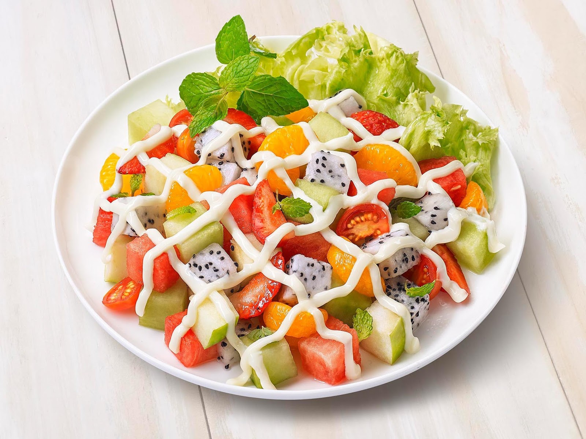
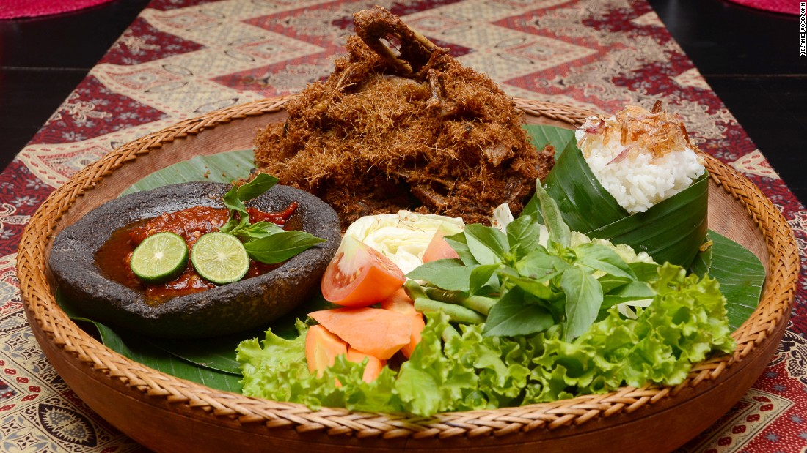
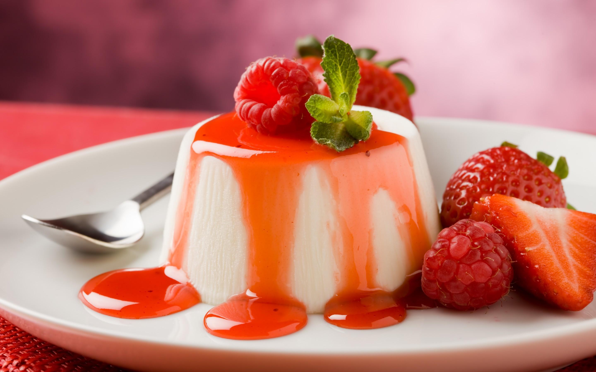

Appetizer

Appetizer merupakan hidangan pembuka yang disajikan dalam porsi kecil, atau hidangan pembangkit selera makan/ makanan pemula sebelum main course.
Appetizer berfungsi merangsang nafsu makan sebelum hidangan utama dinikmati
Contoh appetizer :
- Cold Appetizer
yaitu hidangan pembuka yang dihidangkan secara dingin atau segar, contohnya fruit salad, vegetable salad, dan coctail.
- Hot Appetizer
yaitu hidangan pembuka yang melalui proses pemasakan dan dihidangkan dalam keadaan panas, contohnya risoles, croket.
Main Course

Main Course atau makanan utama adalah hidangan pokok dari suatu susunan menu lengkap yang dihidangkan pada waktu lunch maupun dinner, ukuran porsinya lebih besar dari pada appetizer.
Contoh Main course :
- Lauk pauk hewani yang dihidangkan pada main course ssperti daging, ikan, unggas dan seafood yang dioleh dengan bermacam-macam cara dan menghidangkannya dengan saus dan besar porsinya berkisar 175gram.
- Sayur yang dihidangkan pada main course adalah sayur continental. Pada umumnya seperti buncis, bunga kol, lobak putih, brokoli dan lainnya dan besarnya adalah 75 gram.
- Kentang maupun penggantinya seperti macam-macam pasta yang dihidangkan dengan roti/roll sebesar 75 gram. Untuk nasi juga kadang mengganti kentang dengan lauk-pauk yang sesuai.
Dessert

Dessert atau hidangan penutup merupakan hidangan yang disajikan setelah hidangan utama (main course) sebagai hidangan penutup atau biasa disebut dengan istilah pencuci mulut. Sajian dessert sering dinamakan The Final Course atau The Last Course yang berasa manis.
Contoh dessert :
- Hidangan Penutup Dingin (Cold Dessert)
Adalah dessert yang disajikan pada suhu dingin. Walaupun disajikan pada suhu dingin tidak menutup kemungkinan proses pengolahannya melalui proses pemanasan sebelum disajikan secara dingin, dengan memasukkan ke dalam almari pendingin. Penyajian dessert dalam suhu dingin harus benar-benar disajikan pada suhu dingin tak terkecuali alat hidangnya. Contoh:Ice Cream, Pudding, Mousses, Fruit Pie, Cake dan lain sebagainya.
- Hidangan Penutup Panas (Hot Dessert)
Adalah dessert yang disajikan pada temperatur panas atau hangat.S esuai dengan namanya hot dessert maka proses akhirnya harus dipanaskan terlebih dahulu. Penyajian hot dessert harus benar-benar panas atau hangat termasuk alat hidang yang dipergunakan harus dipanaskan dahulu. Contoh:Banana Flambé, Apple Pie, Souffles.